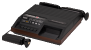
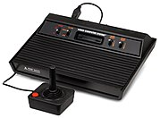
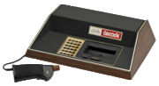
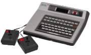
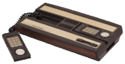

| Name | Fairchild Channel F | Atari VCS/2600 Sears Video Arcade |
Bally Astrocade | Magnavox Odyssey | Intellivision | |
|---|---|---|---|---|---|---|
| Manufacturer | Fairchild Semiconductor | Atari | Bally Technologies | Magnavox | Mattel | |
| Console |  |  |  |  |  | |
| Launch prices | US$169.95 (equivalent to $750 in 2018) | US$199 (equivalent to $830 in 2018) | US$299 (equivalent to $1,240 in 2018) | US$200 (equivalent to $770 in 2018)
JP¥49,800 (equivalent to ¥ 75,900 in 2019) |
US$299 (equivalent to $910 in 2018) | |
| Release date |
|
|
|
|
| |
| Media | Cartridge | Cartridge and Cassette (Cassette available via special 3rd party attachment) | Cartridge and cassette/Floppy, available with ZGRASS unit | Cartridge | Cartridge | |
| Top-selling games | Videocart-17: Pinball Challenge | Pac-Man , 7 million (as of September 1, 2006) [44] | N/A | N/A | :Las Vegas Poker & Blackjack 1.939 million Major League Baseball 1.085 million (as of June 1983) | |
| Backward compatibility | N/A | N/A | N/A | None | Atari 2600 games through the System Changer module | |
| Accessories (retail) | N/A |
|
|
|
| |
| CPU | 1.79 MHz (PAL 2.00 MHz) Fairchild F8 | 1.19 MHz MOS Technology 6507 | 1.789 MHz Zilog Z80 | 1.79 MHz Intel 8048 8-bit microcontroller | 894.886 kHz General Instrument CP1610 | |
| Memory | Main RAM 64 bytes Video RAM 2 kB (2×128×64 bits) |
128 bytes RAM within MOS Technology RIOT chip (additional RAM may be included in game cartridges) | Main RAM 4 kB (up to 64 kB with external modules in the expansion port) | CPU-internal RAM: 64 bytes Audio/video RAM: 128 bytes |
Main RAM 524 bytes
Video RAM 932 bytes | |
| Video | Resolution |
102×58 to 128×64 |
160×192 |
True: 160×102 |
160×200 (NTSC) |
160x96 (20x12 tiles of 8x8 pixels) |
| Palette |
8 colors |
128 colors (NTSC) |
32 colors (8 intensities) |
16 colors (fixed); sprites use 8 colors |
16 color | |
| Colors on Screen |
8 simultaneous (maximum of 4 per scanline ) |
128 simultaneous (2 background colors and 2 sprite colors (1 color per sprite) per scanline) |
True: 8 |
16 simultaneous | ||
| Sprites |
1 |
2 sprites, 2 missiles, and 1 ball per scanline |
Unlimited (software controlled) |
|
8 sprites, 8x16 half-pixels | |
| Other | Smooth multi-directional hardware scrolling | |||||
| Audio | Mono audio with:
|
Mono audio with:
|
Mono audio with:
|
Mono audio with:
|
Mono audio with:
| |